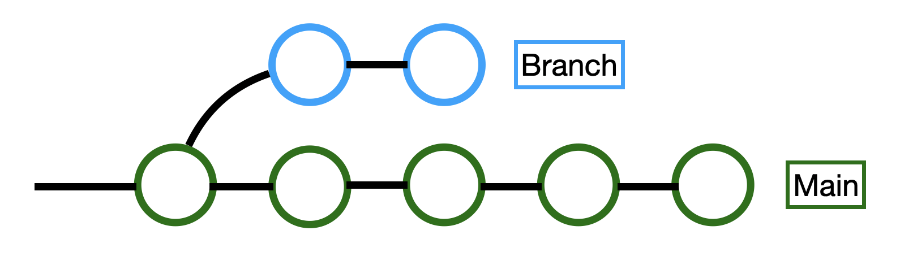

Aprenda aqui mesmo como usar da ferramenta "Git" para desempenhar
um fluxo de trabalho eficiente com sua dupla: o "Github".
Git e Github
O Git e o Github são ferramentas essenciais para qualquer desenvolvedor
que se preze.
O Github, sendo apenas a versão na nuvem do Git, é a plataforma
que armazena os códigos e comentários de centenas de milhares de desenvolvedores
por todo o mundo.
O Git, por outro lado, é a ferramenta de controle de versão usada
mundialmente para rastrear alterações e desenvolvimento de códigos. Com ele,
você pode salvar seus códigos novos ao mesmo tempo que atribui alterações
aos mesmos.
Comandos do Git
Esses são os comandos do Git mais importantes:
Clone
O comando "git clone" é usado para criar uma cópia (ou "clone") de
um repositório já existente na nuvem. Você utiliza de um endereço de
repositório para especificar o repositório-alvo.
Branch
O comando "git branch" permite o usuário criar, listar, renomear e remover
ramos (branches), esses sendo seções separadas do ramo principal (main) os quais
você pode experimentar com segurança.

Commit
"Git commit" cria um "instantâneo" das mudanças atuais no código, ou seja,
ele salva as alterações no projeto para poder despachá-las posteriormente.
Merge
Uma das ações possíveis no Github. O "merge" coleta todos os "commits" do ramo
atual e os mescla à ramificação principal (main) Essencialmente, ele pode tanto adicionar,
quanto remover.
Pull Request
Por fim, o último comando do github na lista. O "pull request" cria uma solicitação
de "merge" para o ramo atual. Ou seja, quando um "pull request" é feito, alguém
deve aceitar as alterações propostas pelo ramo especificado para então tais serem
adicionadas ao ramo principal (main). Isso garante que apenas as alterações aprovadas
sejam repassadas para o projeto final.